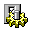
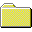
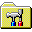

我的电脑

工作台
文档

文件管理器
_
×
文件(F)
编辑(E)
查看(V)
帮助(H)
地址:
我的电脑
工作台
文档
名称
大小
类型
(C:)
2.1GB
本地磁盘
控制面板
系统文件夹
打印机
系统文件夹
读取软盘
桌面
工作台
_
×
文件(F)
编辑(E)
查看(V)
帮助(H)
我的电脑
工作台
文档
车票转化.exe
2KB
应用程序
工作台
文档
_
×
文件(F)
编辑(E)
查看(V)
帮助(H)
地址:
我的电脑
工作台
文档
名称
大小
类型
一号车厢
文件夹
二号车厢
文件夹
三号车厢
文件夹
四号车厢
文件夹
文档
正在复制...
从:
C:\Arachne\车票转化.exe
到:
A:\合成结果
取消
正在读取软盘...
正在检测可读取内容
取消
信息
确定
开始
--:--
工作台
文档

设置
帮助
关闭系统...